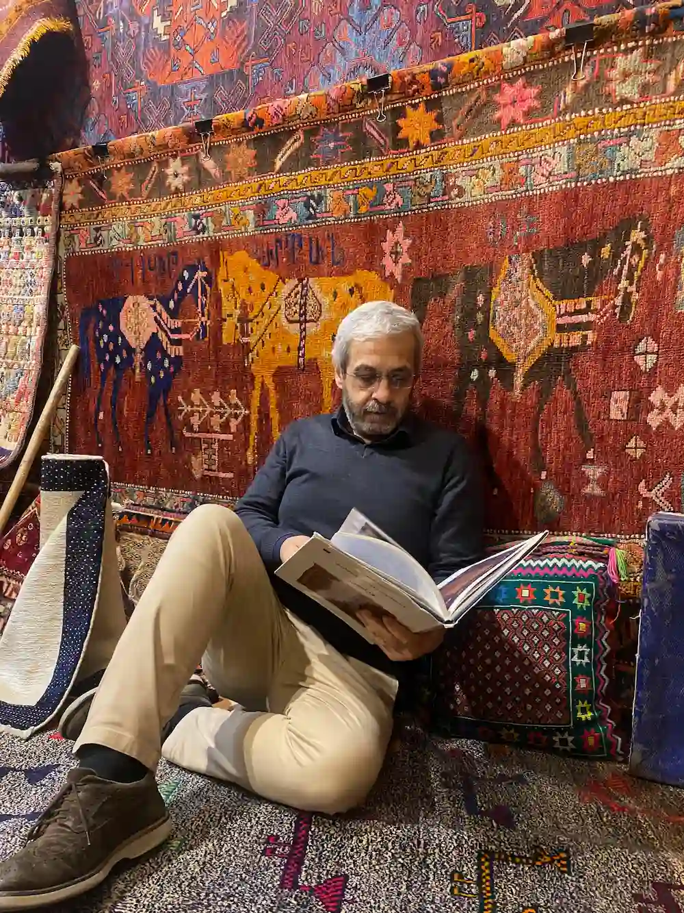
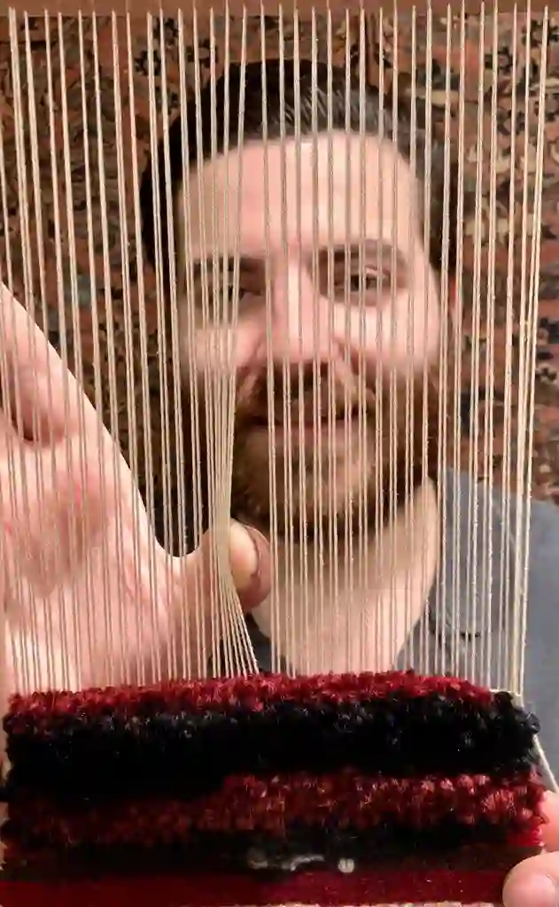
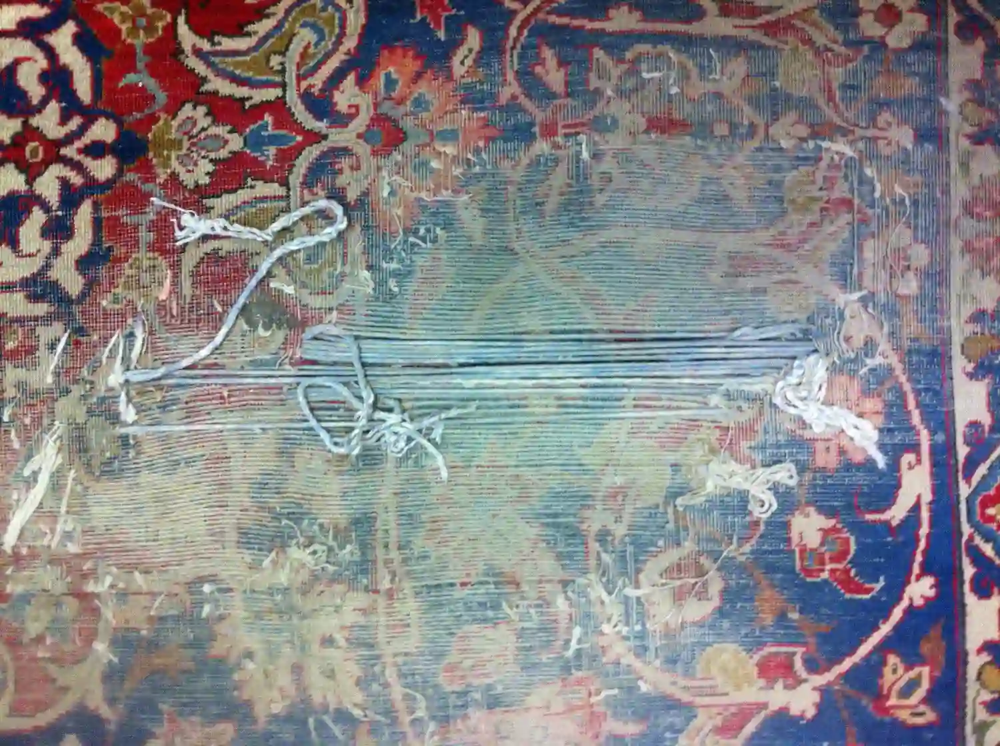

Persian Carpets
If you would like to browse a first selection online, you can visit the Persian carpet catalog; for advice on sizes, materials or care, you can also contact us directly.


Every carpet is a unique handcrafted work
Every carpet is a unique and irreplaceable handcrafted work whose characteristics differ according to cultural patterns and the natural resources available.
Lustrous, fine and soft wool is the basic material used in carpet weaving. In Persia and Turkestan there is a curious type of sheep with a fat tail. When the pastures are rich, the animal stores all the fat in its tail, forming a kind of tuft that can sometimes weigh as much as twenty kilos. This sheep provides a very fine and highly resistant wool. In the Kerman region of Persia, very white goats produce a glossy and strong wool.
For particularly fine carpets, lamb's wool is used to make the surface especially soft; camel wool is also used on its own or blended with sheep's wool, sometimes keeping its natural shades.


Silk was used only for carpets made for the Persian court; with both warp and weft in silk, the highest degree of fineness and splendour was achieved. Among these precious carpets there is also another type with a wool surface and silk warp and weft: the combination of the two materials allows a denser knotting.
Among nomadic peoples, who still follow the old method today, sheep are generally shorn in late spring. Before shearing, the animal is washed on the banks of rivers. After shearing, the wool is washed a second time in the river or in large containers, trodden with the feet and then spread out to dry in the air. Then comes spinning, still carried out with traditional methods, followed by dyeing.
Persian terminology used in the carpet field
Poshti/Padari - approx. 0.90 x 0.60 format
Zarocharak - approx. 1.20 x 0.80 format
Kharak - approx. 2.00 x 0.80 format
Zaronim - approx. 1.50 x 1.00 format
Ghalliceh/Sajadeh - approx. 2.00 x 1.40
Pardeh - approx. 2.70 x 1.70
Chahargush - square
Kenareh - runner
Loom
There are two kinds of looms. The horizontal loom, used by nomadic tribes, is easy to transport because it is made of two wooden beams laid horizontally on the ground. The fixed vertical loom, on the other hand, consists of a vertical frame and is mainly used by settled populations.
Yarns
Since ancient times the raw materials used in Persian carpets have been exclusively natural: animal fibres, such as sheep and goat wool, and vegetable fibres such as cotton. Cotton, being a strong and stable material, is especially suitable for the carpet's structure, that is to say the warp and the weft.
Silk is the most precious and sophisticated fibre of all: lustrous and fine, it enhances the outlines of ornamental motifs in silk-mix pieces. In the most valuable examples, silk thread forms the whole carpet, creating unique works of extraordinary knotting refinement, decorative detail and chromatic harmony.
Knotting
There are mainly two knotting techniques: the Torkibaft or Ghiordes knot (Turkish knot), which is symmetrical, and the Farsibaft or Senneh knot (Persian knot), which is asymmetrical. There is also the Jofti knot (double knot), sometimes called a "trick" knot because it is used to speed up work in more commercial-quality rugs.
This knot is made by wrapping a weft thread around four warp threads rather than only two, as happens in normal knots.
Designs
The design may be spontaneous or based on a cartoon. A spontaneous design is invented and executed by the knotter, following the historical memory of his or her own ethnic tradition. It finds its finest expression in nomadic pieces such as Gabbeh, Qashqai and Lori, where the knotter's expressive freedom is given full space.
More precise pieces are instead made by copying a cartoon, that is, a drawing executed on graph paper where colours, decorations and the number of knots are predefined. In some cases a trial or sample called Vaghireh is also produced; it represents a quarter of the carpet and serves to verify the harmony of the composition and colour combinations.
The designs used are of many different kinds: floral, geometric, central medallion, garden, tree of life, open-field prayer rugs, boteh, golfrang, herati, figurative and hunting scenes.
Maintenance


Daily use can cause damage to a carpet if it is not properly maintained. It is good practice to protect your carpet from dust, moths and moisture. A high-quality wash suited to the type of piece is essential for proper maintenance.
The fundamental stages in cleaning a carpet are specialist dust-beating, which removes all the dust hidden at the base of the knots, washing with water and neutral soap, and restoring the pile. Home washing is not recommended, as it can compromise the carpet's ideal condition or even damage it severely.
To preserve your carpet in the best possible way for many years
Visit a museum and admire an antique Persian carpet. Your carpet too can age just as beautifully. What is the secret? Simpler than you might imagine: a carpet is made to be used and walked on; what destroys it is moths, constant strong humidity, and above all poor maintenance.
Please note: silk and antique carpets should always be entrusted to experts for washing. For direct advice on the condition of a piece, we invite you to contact the shop.
- Avoid "violent" cleaning methods: beating, hitting or hanging a carpet over railings stretches the structural fibres of the foundation, fringes and borders.
- Check the condition of fringes and borders: excessive wear may require a costly restoration to preserve the value of the piece.
- Walking on the carpet upside down on the floor is a gentler way of cleaning it and helps the sand trapped at the base of the knots to detach.
- Regular but moderate carpet beating is not harmful; wiping the pile direction with a damp cloth and water with vinegar refreshes the surface and restores its shine.
- For serious stains, it is best to act quickly by removing or absorbing the spilled liquid and then entrusting the piece to a specialised washing company.
- In recent years the return of moth infestation has put precious textiles at even greater risk, especially those stored for long periods.
- If the piece will not be used, after a careful deep cleaning and ideally after washing, apply a good moth treatment, roll it in the direction of the pile and store it in a dry, cool and airy place.